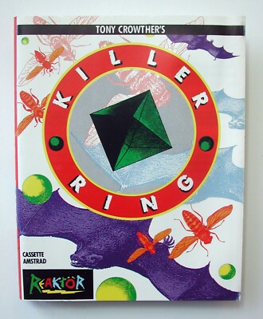

Killer Ring
Research in progress. Killer Ring appeared in 1987 under the Reaktor label. The catalogue credits Byte Engineers. Known catalogue formats: Commodore 64, Amstrad CPC. Byte Engineers was the credited name used by Tony Crowther for this work while he was contracted to Alligata Software. This holding page will be expanded as contemporary material and first-hand recollections are reviewed.